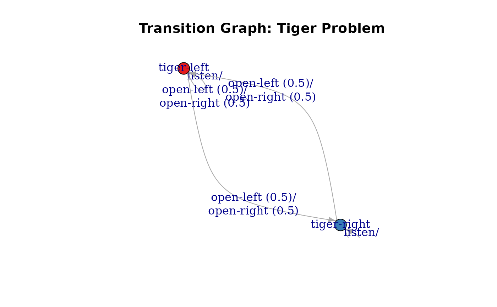
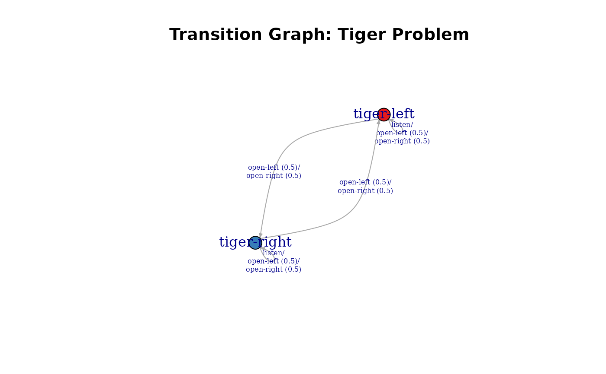
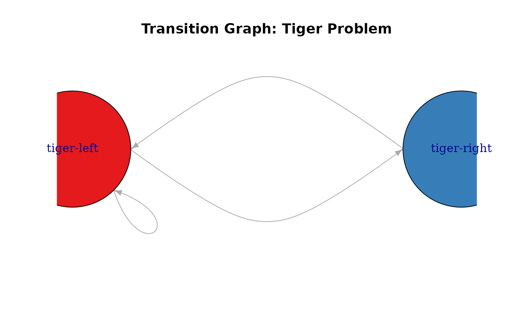
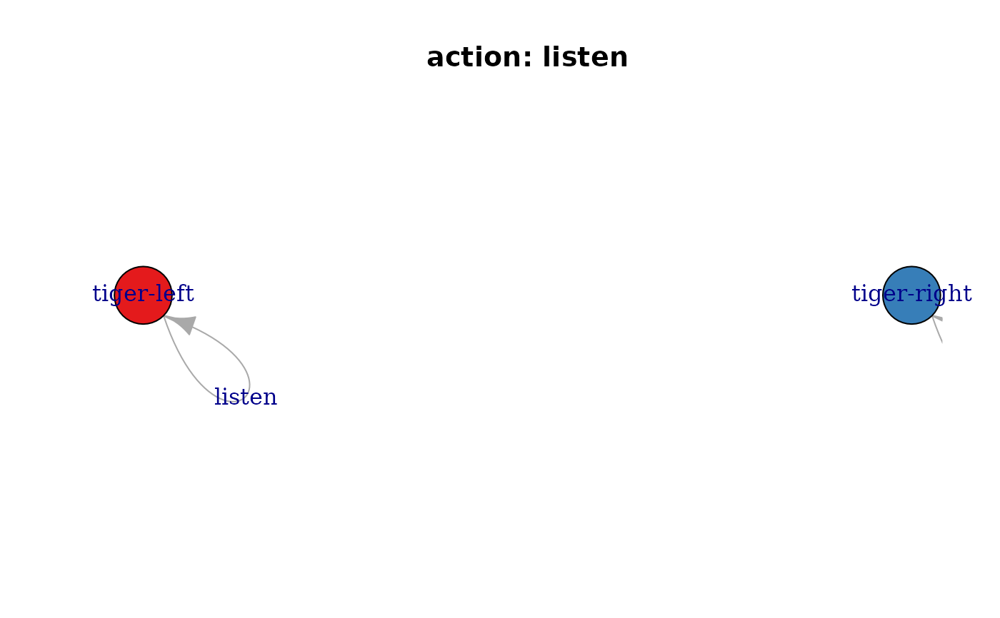
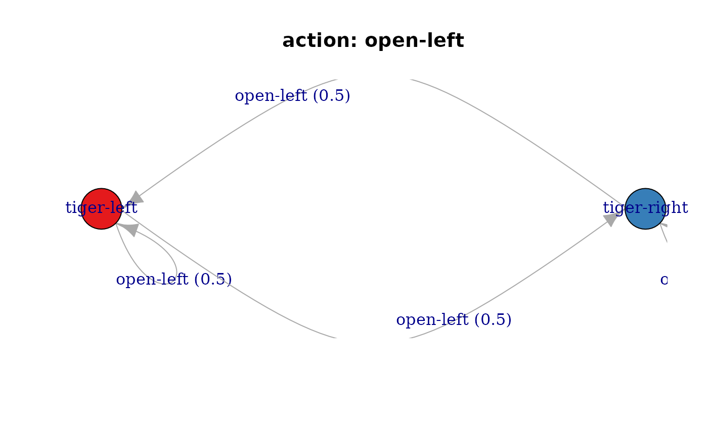
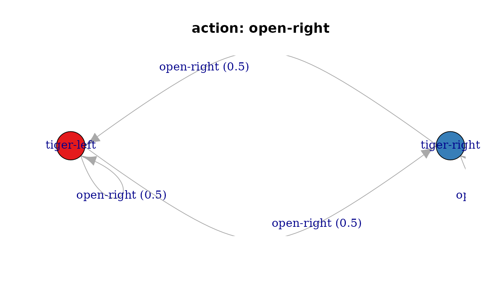
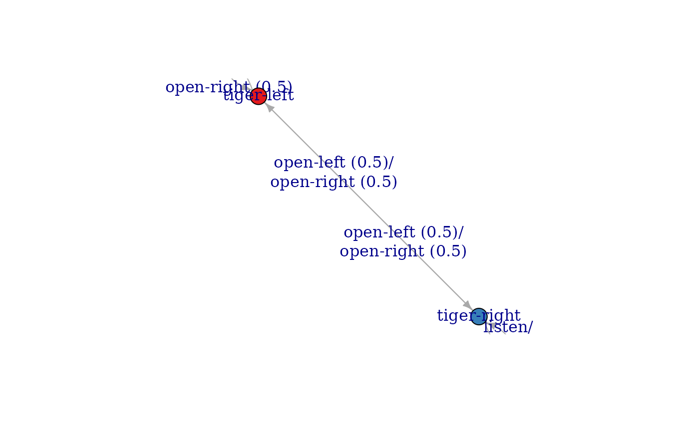
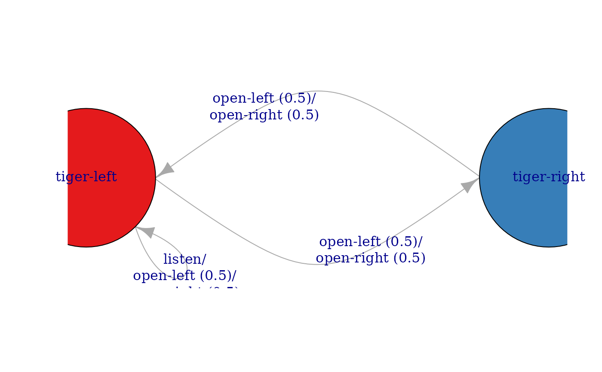

Returns the transition model as an igraph object.
Usage
transition_graph(
x,
action = NULL,
episode = NULL,
epoch = NULL,
state_col = NULL,
simplify_transitions = TRUE,
remove_unavailable_actions = TRUE
)
plot_transition_graph(
x,
action = NULL,
episode = NULL,
epoch = NULL,
state_col = NULL,
simplify_transitions = TRUE,
main = NULL,
...
)Arguments
- x
- action
the name or id of an action or a set of actions. Bey default the transition model for all actions is returned.
- episode, epoch
Episode or epoch used for time-dependent POMDPs. Epochs are internally converted to the episode using the model horizon.
- state_col
colors used to represent the states.
- simplify_transitions
logical; combine parallel transition arcs into a single arc.
logical; don't show arrows for unavailable actions.
- main
a main title for the plot.
- ...
further arguments are passed on to
igraph::plot.igraph().
Details
The transition model of a POMDP/MDP is a Markov Chain. This function extracts the transition model as an igraph object.
See also
Other POMDP:
MDP2POMDP,
POMDP(),
accessors,
actions(),
add_policy(),
plot_belief_space(),
projection(),
reachable_and_absorbing,
regret(),
sample_belief_space(),
simulate_POMDP(),
solve_POMDP(),
solve_SARSOP(),
update_belief(),
value_function(),
write_POMDP()
Other MDP:
MDP(),
MDP2POMDP,
MDP_policy_functions,
accessors,
actions(),
add_policy(),
gridworld,
reachable_and_absorbing,
regret(),
simulate_MDP(),
solve_MDP(),
value_function()
Examples
data("Tiger")
g <- transition_graph(Tiger)
g
#> IGRAPH 224007a DN-- 2 4 --
#> + attr: name (v/c), color (v/c), label (e/c)
#> + edges from 224007a (vertex names):
#> [1] tiger-left ->tiger-left tiger-left ->tiger-right tiger-right->tiger-left
#> [4] tiger-right->tiger-right
plot_transition_graph(Tiger)

plot_transition_graph(Tiger, vertex.size = 20,
edge.label.cex = .5, edge.arrow.size = .5, margin = .5)

plot_transition_graph(Tiger, vertex.size = 60,
edge.label = NA, edge.arrow.size = .5,
layout = rbind(c(-1,0), c(+1,0)), rescale = FALSE)

## Plot an individual graph for each actions and use a manual layout.
for (a in Tiger$actions) {
plot_transition_graph(Tiger, action = a,
layout = rbind(c(-1,0), c(+1,0)), rescale = FALSE,
main = paste("action:", a))
}



## Plot using the igraph library
library(igraph)
plot(g)

# plot with a fixed layout and curved edges
plot(g,
layout = rbind(c(-1, 0), c(1, 0)), rescale = FALSE,
edge.curved = curve_multiple_directed(g, .8),
edge.loop.angle = -pi / 4,
vertex.size = 60
)

## Use visNetwork (if installed)
if(require(visNetwork)) {
g_vn <- toVisNetworkData(g)
nodes <- g_vn$nodes
edges <- g_vn$edges
# add manual layout
nodes$x <- c(-1, 1) * 200
nodes$y <- 0
visNetwork(nodes, edges) %>%
visNodes(physics = FALSE) %>%
visEdges(smooth = list(type = "curvedCW", roundness = .6), arrows = "to")
}
#> Loading required package: visNetwork